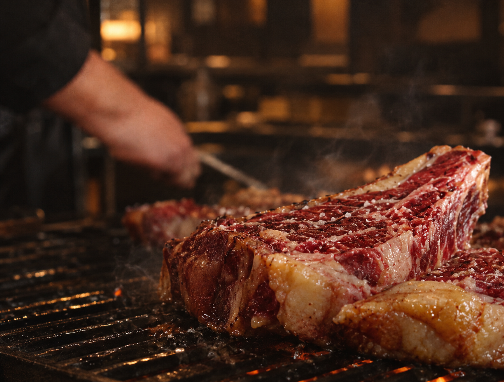
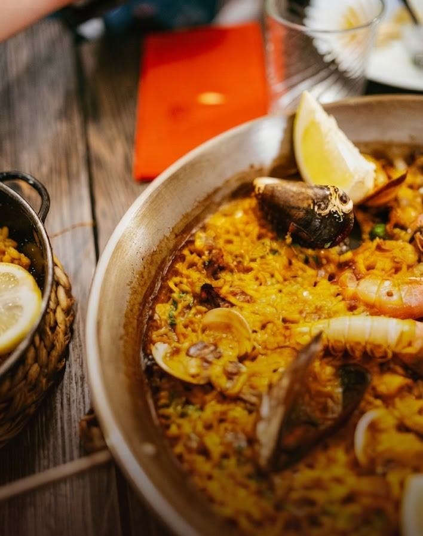
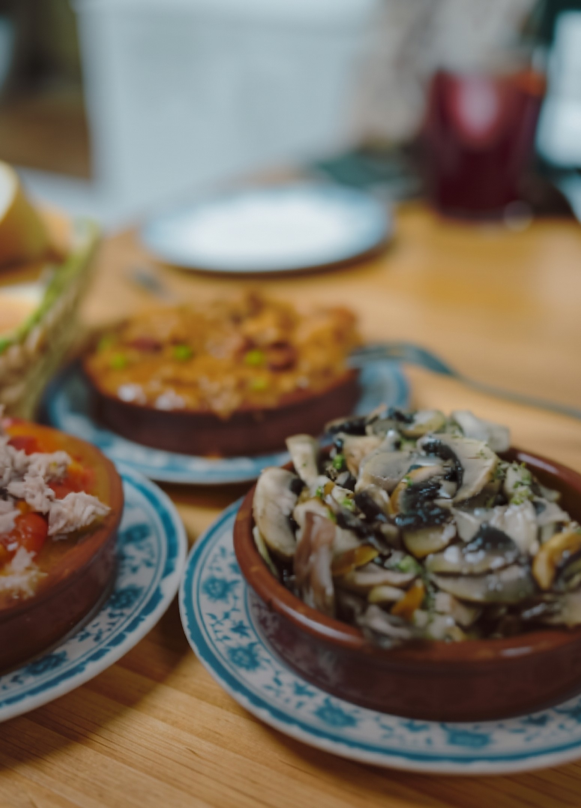

- Cocina de fuego y territorio
El sabor de siempre, hecho a la brasa
Producto local, encina y tiempo. Una mesa honesta en el corazón de la sierra.
Una cocina con raíces, un lugar al que volver
Desde 1998 cocinamos como aprendimos: respetando el producto, dominando el fuego y atendiendo cada mesa como si fuera la primera.
Nuestra despensa mira a la sierra y cambia con sus estaciones. Carnes seleccionadas, verduras de guertas cercada y una bodega pensada para disfrutar.
Platos que cuentan nuestra historia

Chuletón de vaca madurada

Arroz del día

Tapas de siempre